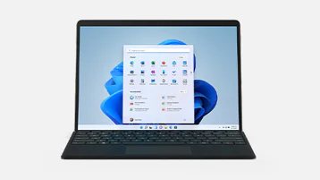
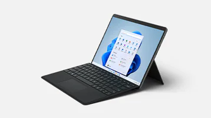
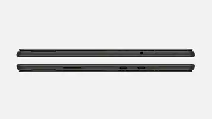
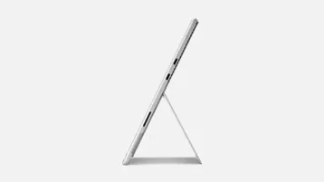

|  |  |  |  |
|---|---|---|---|
| Virtually edge-to-edge PixelSense™ Flow touch display, with up to 120Hz refresh rate |
11th Gen Intel® Core™ processor, Windows 11, and up to 32GB1 RAM | Set your perfect angle with built-in Kickstand that adjusts nearly 180 degrees | Built-in 5.0MP 1080p front-facing camera and 10MP 4K rear-facing camera |
| Create the ultimate productivity setup with Thunderbolt™ 4 ports | A real Keyboard — add Surface Pro Signature Keyboard* to type in comfort, with backlit keys and large glass touchpad | Dedicated charging port | |
| Pair with Surface Slim Pen 2,* stored and charged in Surface Pro Signature Keyboard,* for the natural feeling of pen on paper7 |
Multitask across Microsoft 365 apps and enjoy console caliber gaming* | Ultra-portable design, starting at just 1.96 lb (891 g) | Two USB-C® with Thunderbolt™ 4 ports |
| Dedicated charging port |